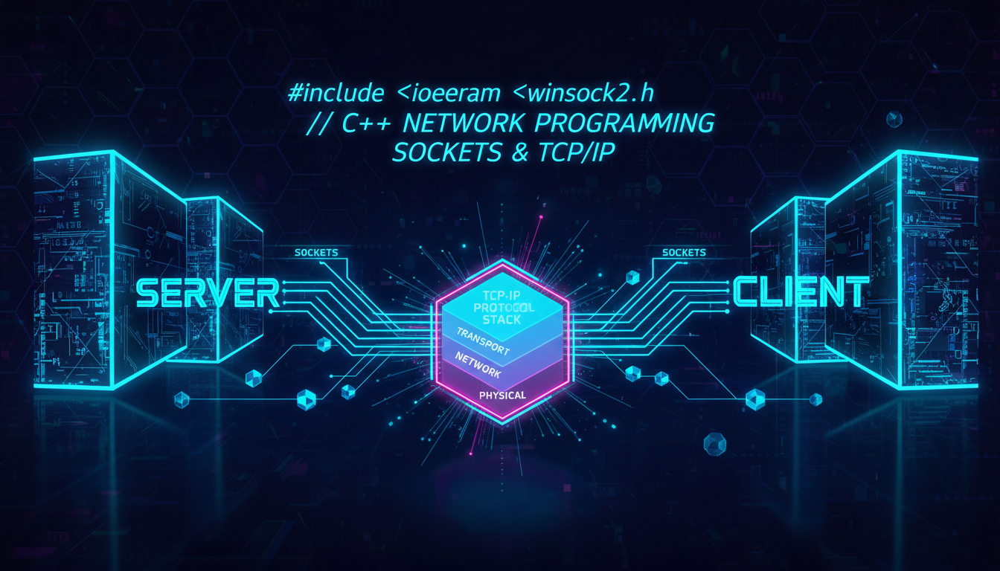

Сокети, Winsock, TCP/IP клієнт-сервер

Мережеве програмування дозволяє обмін даними між комп'ютерами через мережу.
// Простий TCP-сервер (Windows)
#include <iostream>
#include <winsock2.h>
#pragma comment(lib, "ws2_32.lib")
int main() {
WSADATA wsaData;
WSAStartup(MAKEWORD(2, 2), &wsaData);
// Створення сокета
SOCKET serverSocket = socket(AF_INET, SOCK_STREAM, 0);
// Прив'язка до порту
sockaddr_in serverAddr;
serverAddr.sin_family = AF_INET;
serverAddr.sin_port = htons(8080);
serverAddr.sin_addr.s_addr = INADDR_ANY;
bind(serverSocket, (sockaddr*)&serverAddr, sizeof(serverAddr));
listen(serverSocket, 5);
std::cout << "Сервер слухає порт 8080..." << std::endl;
// Прийом з'єднання
SOCKET clientSocket = accept(serverSocket, nullptr, nullptr);
// Відправка даних
const char* message = "Привіт, клієнте!";
send(clientSocket, message, strlen(message), 0);
closesocket(clientSocket);
closesocket(serverSocket);
WSACleanup();
return 0;
}